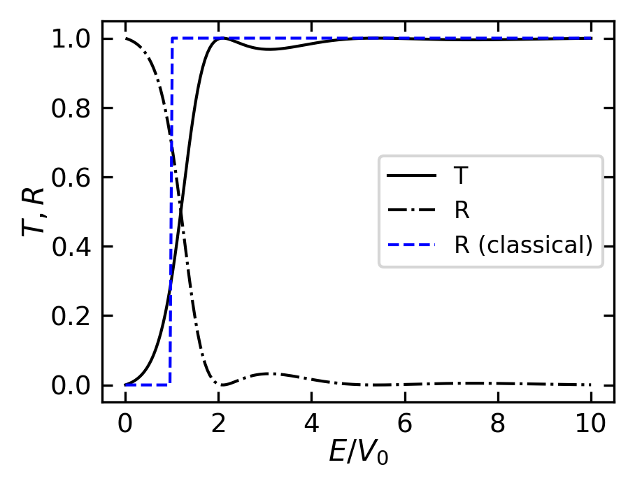
43 Potential barriers and wells
43.1 Potential barrier
In the last lecture, we have discussed the Schrödinger equation and the solution of it on a simple potential energy step. We have used for this purpose the time-independent Schrödinger equation
\[-\frac{\hbar^2}{2m}\frac{\partial^2}{\partial x^2}\psi + V(x)\psi = E\psi\]
which is comparable to the Helmholz equation in optics. For the solutions of the Schrödinger equation we have we noticed that we should take care of a number of boundary conditions:
- The wave function \(\psi(x)\) must be continuous.
- The first derivative of the wave function \(\frac{\partial \psi}{\partial x}\) must be continuous.
- The wave function \(\psi(x)\) must be square integrable, i.e. \(\int |\psi(x)|^2 dx < \infty\).
These are the main conditions, which help us to solve the Schrödinger equation. We used these to study the potential step with two conditions
- The energy of the incident quantum object is below the potential step, i.e. \(E < V_0\).
- The energy of the incident quantum object is below the potential step, i.e. \(E > V_0\).
We will use the knowledge from the previous lecture to study the potential barrier in this lecture. The potential barrier is a potential energy step, which is finite in width. We will study the behavior of the wave function in the regions before and after the barrier and the tunneling effect.
43.2 The tunneling effect
In order to discuss the tunnel effect we construct a potential barrier with a finite width \(\Delta x = a\). Thus, for the regions \(x < 0\) and \(x > a\) the potential energy vanishes \(E_{\mathrm{pot}} = 0\), whereas for \(0 \le x \le a\) the potential energy exhibit \(E_{\mathrm{pot}} = V_0\). Moreover, now with split the definition range \(-\infty < x < +\infty\) into three region, namely
\[ \begin{aligned} \mathrm{Region \, 1} & \; x < 0\\ \mathrm{Region \, 2} & \; 0 \le x \le a\\ \mathrm{Region \, 3} & \; a < x \mathrm{.} \end{aligned} \]
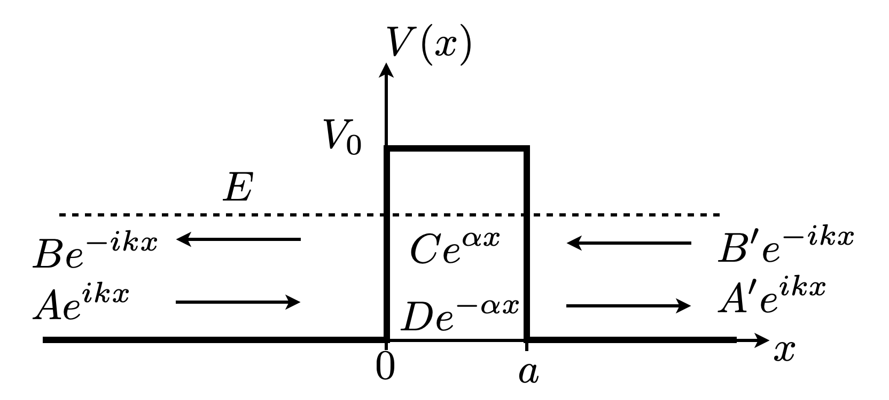
For every region we state the genernal solution of the position-dependent amplitude \(\psi \left( x \right)\) of the wave function as we have derived them previously
\[ \begin{aligned} \psi_1 & = A \mathrm{e}^{+i k x} + B \mathrm{e}^{-i k x}\\ \psi_2 & = C \mathrm{e}^{\alpha x} + D \mathrm{e}^{-\alpha x}\\ \psi_3 & = A^{\prime} \mathrm{e}^{+i k x} + B^{\prime} \mathrm{e}^{-i k x} \end{aligned} \]
and apply the boundary conditions we have repeated on the top.
Boundary condition at \(x = 0\)
\[ \begin{aligned} \psi_1 \left( x = 0 \right) & = \psi_2 \left( x = 0 \right)\\ \frac{\mathrm{d}}{\mathrm{d}x} \psi_1 \left( x = 0 \right) & = \frac{\mathrm{d}}{\mathrm{d}x} \psi_2 \left( x = 0 \right) \mathrm{,} \end{aligned} \]
Boundary condition at \(x = a\)
\[ \begin{aligned} \psi_2 \left( x = a \right) & = \psi_3 \left( x = a \right)\\ \frac{\mathrm{d}}{\mathrm{d}x} \psi_2 \left( x = a \right) & = \frac{\mathrm{d}}{\mathrm{d}x} \psi_3 \left( x = a \right) \mathrm{.} \end{aligned} \]
Incident wave in region 3
In addition there is no potentially reflecting interface in region 3 at a position \(x > a\). Thus, we can exclude a wave propagating along \(-x\) direction and set
\[ B^{\prime} = 0 \mathrm{.} \]
From the previous cases we know that at the first boundary (\(x=0\)) the incident wave propagating along \(+x\) direction in region 1 is (partially) reflected. On the basis of the propagation directions we can explicitly write down the incident wave as \(\psi_{1}^{i} = A \cdot \mathrm{e}^{+i k x}\), the reflected wave as \(\psi_{1}^{r} = B \cdot \mathrm{e}^{-i k x}\), and the wave transmitted through the barrier propagating along \(+x\) direction in region 3 as \(\psi_{3}^{t} = A^{\prime} \cdot \mathrm{e}^{+i k x}\). In order to calculate the transmission probability or tunneling probability we have to know how much intensity from the incident wave reaches the backside of the barrier,
\[ T \left(E, a\right) = \frac{\left| \psi_{3}^{t} \right|^2}{\left| \psi_{1}^{i} \right|^2} = \frac{\left| A^{\prime} \right|^2}{\left| A \right|^2} = \left| \frac{A^{\prime}}{A} \right|^2 \mathrm{.} \]
Let’s analyze how the wave functions connect at the boundaries. From the boundary conditions at x=0 and x=a, we get four key equations relating the amplitudes:
- At x=0, the wave functions must be equal:
\[A + B = C + D\]
- At x=a, the wave functions must be equal:
\[C \mathrm{e}^{+ \alpha a} + D \mathrm{e}^{- \alpha a} = A^{\prime} \mathrm{e}^{+ i k a}\]
- At x=0, the derivatives must be equal:
\[i k \left( A - B \right) = \alpha \left( C - D \right)\]
- At x=a, the derivatives must be equal:
\[\alpha \left( C \mathrm{e}^{+ \alpha a} - D \mathrm{e}^{- \alpha a} \right) = i k A^{\prime} \mathrm{e}^{+ i k a}\]
Solving the equations
The solution of these equations is a bit more extensive writing though not to complicated. First, from equations 1 and 3, we can solve for C and D in terms of A and B:
\[C = \frac{1}{2}\left[(A+B) + \frac{ik}{\alpha}(A-B)\right]\] \[D = \frac{1}{2}\left[(A+B) - \frac{ik}{\alpha}(A-B)\right]\]
Substituting these into the equation at x=a:
\[\frac{1}{2}\left[(A+B) + \frac{ik}{\alpha}(A-B)\right]\mathrm{e}^{+ \alpha a} + \frac{1}{2}\left[(A+B) - \frac{ik}{\alpha}(A-B)\right]\mathrm{e}^{- \alpha a} = A^{\prime} \mathrm{e}^{+ i k a}\]
And the derivative equation at x=a:
\[\alpha \left(\frac{1}{2}\left[(A+B) + \frac{ik}{\alpha}(A-B)\right]\mathrm{e}^{+ \alpha a} - \frac{1}{2}\left[(A+B) - \frac{ik}{\alpha}(A-B)\right]\mathrm{e}^{- \alpha a}\right) = i k A^{\prime} \mathrm{e}^{+ i k a}\]
From the first equation, multiply both sides by 2:
\[(A+B) + \frac{ik}{\alpha}(A-B)]\mathrm{e}^{+ \alpha a} + [(A+B) - \frac{ik}{\alpha}(A-B)]\mathrm{e}^{- \alpha a} = 2A^{\prime} \mathrm{e}^{+ i k a} \tag{1}\]
From the second equation, multiply by 2/α:
\[[(A+B) + \frac{ik}{\alpha}(A-B)]\mathrm{e}^{+ \alpha a} - [(A+B) - \frac{ik}{\alpha}(A-B)]\mathrm{e}^{- \alpha a} = \frac{2ik}{\alpha} A^{\prime} \mathrm{e}^{+ i k a} \tag{2}\]
Adding equations (1) and (2):
\[2[(A+B) + \frac{ik}{\alpha}(A-B)]\mathrm{e}^{+ \alpha a} = 2A^{\prime} \mathrm{e}^{+ i k a}(1 + \frac{ik}{\alpha})\]
This gives us:
\[(A+B) + \frac{ik}{\alpha}(A-B) = A^{\prime} \mathrm{e}^{i k a - \alpha a}(1 + \frac{ik}{\alpha}) \tag{3}\]
Similarly, subtracting equation (2) from (1):
\[2[(A+B) - \frac{ik}{\alpha}(A-B)]\mathrm{e}^{- \alpha a} = 2A^{\prime} \mathrm{e}^{+ i k a}(1 - \frac{ik}{\alpha})\]
Giving:
\[(A+B) - \frac{ik}{\alpha}(A-B) = A^{\prime} \mathrm{e}^{i k a + \alpha a}(1 - \frac{ik}{\alpha}) \tag{4}\]
From equations (3) and (4) in the collapsed callout, we can solve for \(B\) in terms of \(A\):
\[B = A\left[\frac{(\alpha^2 + k^2)\sinh(\alpha a) - 2ik\alpha\cosh(\alpha a)}{(\alpha^2 + k^2)\sinh(\alpha a) + 2ik\alpha\cosh(\alpha a)}\right]\]
And for \(A'\):
\[A' = \frac{4ik\alpha A\mathrm{e}^{-ika}}{(\alpha^2 + k^2)\sinh(\alpha a) + 2ik\alpha\cosh(\alpha a)}\]
These expressions give us the complete solution for all coefficients in terms of the incident amplitude \(A\).
What we’re interested in is the transmission coefficient \(T\) - how much of the wave makes it through the barrier. This is given by the ratio \(A'/A\):
\[ \frac{A^{\prime}}{A} = \frac{\mathrm{e}^{-i k \cdot a}}{\cosh \left( \alpha \cdot a\right) + \frac{i}{2} \left(\frac{\alpha}{k} - \frac{k}{\alpha}\right) \sinh \left( \alpha \cdot a \right)} \mathrm{.} \]
The transmission probability \(T\) is then the square of this ratio:
\[ \begin{aligned} T & = \left| \frac{A^{\prime}}{A} \right|^2\\ {} & = \frac{1}{\cosh^2 \left( \alpha \cdot a\right) + \frac{1}{4} \left(\frac{\alpha}{k} - \frac{k}{\alpha}\right)^2 \sinh^2 \left( \alpha \cdot a \right)}\\ {} & = \frac{1}{1 + \frac{1}{4}\frac{V_0}{E} \sinh^2 \left( \alpha \cdot a \right)} \end{aligned} \]
For a wide or very high barrier (\(\alpha \cdot a \gg 1\)), this simplifies to:
\[ T \approx 16 \frac{E}{V_0} \left(1 - \frac{E}{V_0} \right) \cdot \mathrm{e}^{-2 \alpha a} \mathrm{.} \]
The transmission probability exhibits an exponential dependence on both the barrier width \(a\) and the parameter \(\alpha\), which is determined by the barrier height \(V_0\) and particle energy \(E\). For example, for a particle with energy \(E = V_0/2\) and barrier width \(a = \lambda/2\) (half the de Broglie wavelength), the transmission probability is approximately 0.7%. This quantum mechanical behavior contrasts sharply with classical mechanics, where a particle with \(E < V_0\) would have zero transmission probability (\(T = 0\)), while a particle with \(E > V_0\) would always transmit completely (\(T = 1\)).
Examining the transmission and reflection coefficients more closely reveals oscillations even when the energy is sufficiently large (\(E / V_0 > 1\)) to overcome the barrier. This behavior is analogous to light waves being reflected between two parallel glass surfaces. Maximum transmission occurs when \(\kappa \cdot a = m \cdot \pi\), corresponding to a de Broglie wavelength of \(\lambda = 2a/m\) and a path difference of \(\Delta s = 2a\). At position \(x = 0\), the wave reflected at \(x = a\) has a phase difference of \(2\pi\) relative to the wave reflected at \(x = 0\). Since the wave reflected at the potential wall (analogous to a medium with higher refractive index) undergoes a phase shift of \(\pi\), the reflected waves interfere destructively in region 1, resulting in \(R = 0\). Consequently, we obtain \(T = 1\) in region 3. Conversely, a path difference of \(\Delta s = (2m + 1)a\) leads to constructive interference and maximizes \(R\) while minimizing \(T\).
Scanning Tunneling Microscopy
One of the important applications of quantum tunneling is Scanning Tunneling Microscopy (STM). In STM, a sharp metal tip is brought close to a sample surface. The tip-sample separation is controlled by a feedback loop to maintain a constant tunneling current. The tunneling current is exponentially sensitive to the tip-sample separation, allowing atomic-scale resolution. STM can image surfaces with atomic resolution and has been used to study a wide range of materials, from semiconductors to biological molecules.
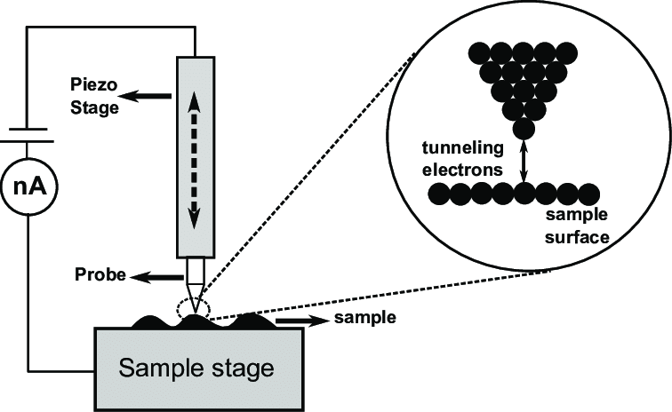
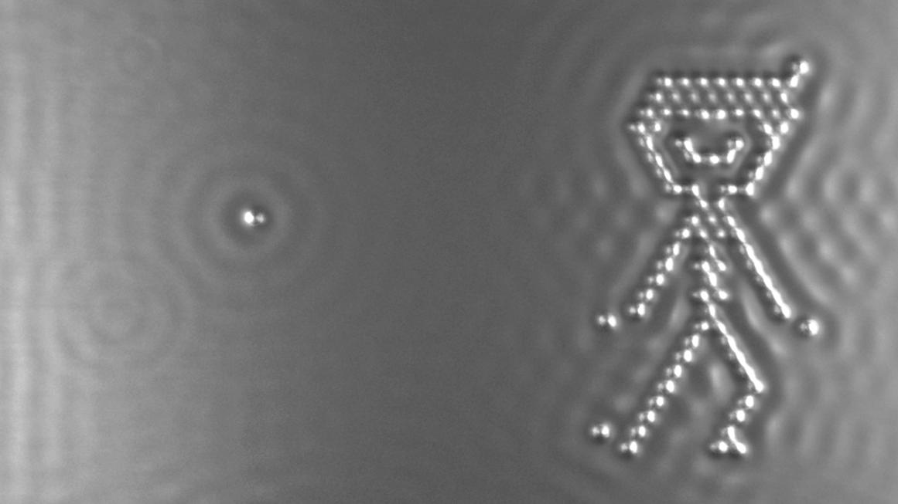
Field Emission microscopy
A simple model for field emission involves electrons tunneling through a triangular potential barrier at a metal surface. When a strong electric field \(F\) is applied, it modifies the rectangular work function barrier \(\phi\) into a triangular shape. The barrier height remains \(\phi\) at the metal surface but decreases linearly with distance \(x\) as \(V(x) = \phi - eFx\).
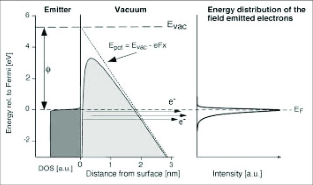
The probability of tunneling through this barrier can be calculated using the WKB approximation. For a triangular barrier, this gives a transmission coefficient of approximately:
\[T \approx \exp\left(-\frac{4\sqrt{2m}\phi^{3/2}}{3\hbar eF}\right)\]
where \(m\) is the electron mass, \(\hbar\) is the reduced Planck’s constant, and \(e\) is the elementary charge. The exponential dependence on the field strength \(F\) makes the emission current very sensitive to changes in the applied field.
The emission current density \(j\) is then proportional to the number of electrons incident on the barrier times their transmission probability:
\[j \approx \frac{e^3F^2}{8\pi h\phi}\exp\left(-\frac{4\sqrt{2m}\phi^{3/2}}{3\hbar eF}\right)\]
This is the Fowler-Nordheim equation for field emission. For a metal tip with work function \(\phi \approx 4.5\) eV, significant emission currents occur when the applied field reaches several V/nm. The strong dependence on \(F\) makes field emission an extremely sensitive probe of surface electric fields and forms the basis for field emission microscopy.
43.3 The Potential Well
43.3.1 Potential well with infnite depth
The potential well is the opposite of the potential barrier. Instead of a barrier that particles must tunnel through, the potential well traps particles within a finite region. The potential well is a common model for bound states in quantum mechanics, such as electrons in atoms or nuclei in molecules. It can be approximated by a square well, where the potential energy is constant within the well and zero outside. A special case is the infinite potential well, where the potential energy is zero inside the well and infinite outside.
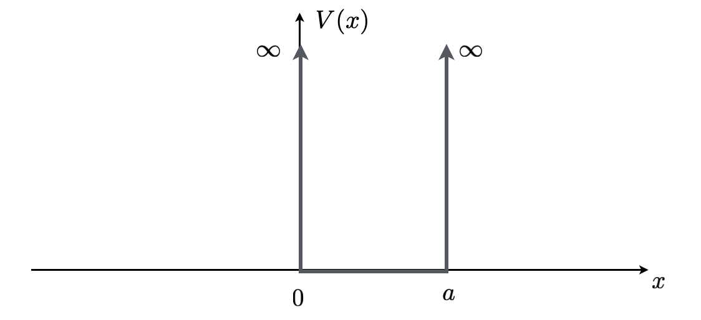
The solutions to the Schrödinger equation in this case are sinusoidal functions as the wavefunction is exactly zero at the boundaries of the well. If the potential is of width \(a\), the boundary conditions are met when the wavefunction is given by:
\[\psi(x) = A \sin\left(\frac{n\pi x}{a}\right)\]
where \(n\) is a positive integer and the wavenumber is correspondingly
\[ k=n\frac{\pi}{a} \]
The energy levels are then quantized:
\[E_n = \frac{\hbar^2 k^2}{2m}=\frac{n^2\pi^2\hbar^2}{2ma^2}\]
The lowest energy level (\(n=1\)) corresponds to the ground state, while higher levels correspond to excited states. The energy levels increase quadratically with \(n\) and the with the inverse square of the width \(a\) of the well.
43.3.2 Potential well with finite depth
For the potential well with finite depth, we consider a potential that is \(-V_0\) for \(-a/2 \leq x \leq a/2\) and 0 elsewhere. As with the barrier, we split the space into three regions:
\[ \begin{aligned} \mathrm{Region \, 1} & \; x < -a/2\\ \mathrm{Region \, 2} & \; -a/2 \le x \le a/2\\ \mathrm{Region \, 3} & \; a/2 < x \mathrm{.} \end{aligned} \]
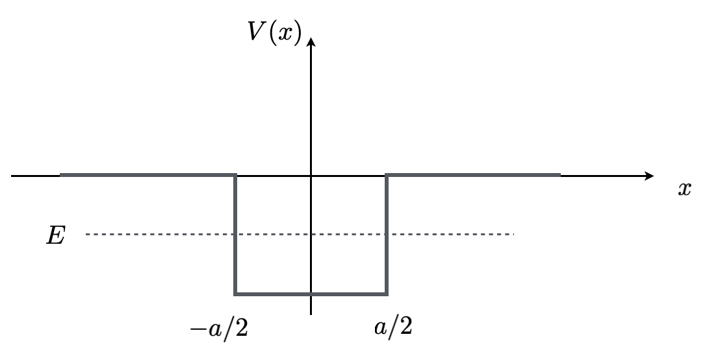
For each region, the general solutions of the time-independent Schrödinger equation take the form:
\[ \begin{aligned} \psi_1 & = A \mathrm{e}^{+i k_1 x} + B \mathrm{e}^{-i k_1 x}\\ \psi_2 & = C \mathrm{e}^{+i k_2 x} + D \mathrm{e}^{-i k_2 x}\\ \psi_3 & = A^{\prime} \mathrm{e}^{+i k_1 x} + B^{\prime} \mathrm{e}^{-i k_1 x} \end{aligned} \]
where \(k_1 = \sqrt{2mE}/\hbar\) and \(k_2 = \sqrt{2m(E+V_0)}/\hbar\).
43.3.2.1 Bound states
When the energy of the particle in the potential well is below zero, we call these states bound states. For \(-V_0 < E < 0\), \(k_1\) becomes imaginary, and the solutions in regions 1 and 3 become exponentially decaying:
\[ \begin{aligned} \psi_1 & = B \mathrm{e}^{\alpha x}\\ \psi_2 & = C \mathrm{e}^{+i k_2 x} + D \mathrm{e}^{-i k_2 x}\\ \psi_3 & = A^{\prime} \mathrm{e}^{-\alpha x} \end{aligned} \]
where \(\alpha = \sqrt{-2mE}/\hbar\). The boundary conditions at \(x = -a/2\) and \(x = a/2\) require both \(\psi\) and \(d\psi/dx\) to be continuous:
\[ \begin{aligned} \psi_1(-a/2) & = \psi_2(-a/2)\\ \psi_2(a/2) & = \psi_3(a/2)\\ \psi_1'(-a/2) & = \psi_2'(-a/2)\\ \psi_2'(a/2) & = \psi_3'(a/2) \end{aligned} \]
For bound states (\(-V_0 < E < 0\)), these conditions lead to transcendental equations. The symmetric solutions satisfy \(k_2\tan(k_2a/2) = \alpha\) and the antisymmetric solutions satisfy \(k_2\cot(k_2a/2) = -\alpha\), where \(k_2 = \sqrt{2m(E+V_0)}/\hbar\) and \(\alpha = \sqrt{-2mE}/\hbar\). These equations must be solved numerically, but for a deep well (\(V_0 \gg E\)), the energy levels are approximately given by:
\[E_n \approx -V_0 + \frac{n^2\pi^2\hbar^2}{2ma^2}\]
where \(n\) is a positive integer. The lowest energy level (\(n=1\)) lies near the bottom of the well, while higher levels are spaced progressively further apart, following a quadratic sequence.
Note
The number of bound states in a finite potential well is always finite. This is in contrast to the infinite potential well where there are infinitely many bound states. The number of bound states depends on the depth \(V_0\) and width \(a\) of the well. We can estimate the maximum number of bound states by noting that the energy of the highest bound state must be less than zero (the continuum starts at \(E=0\)).
Using the approximate energy level formula:
\[-V_0 + \frac{n^2\pi^2\hbar^2}{2ma^2} < 0\]
Solving for \(n\), we get:
\[n < \frac{a}{\pi\hbar}\sqrt{2mV_0}\]
The maximum number of bound states is then the floor of this value. This shows that deeper and wider wells can support more bound states, while very shallow or narrow wells might only support one or even no bound states at all.
For example, for an electron in a potential well of depth 1 eV and width 1 nm, there are approximately 3 bound states. This finite number of bound states is a direct consequence of the finite depth of the well, as higher energy states would have energies above zero and thus belong to the continuum.
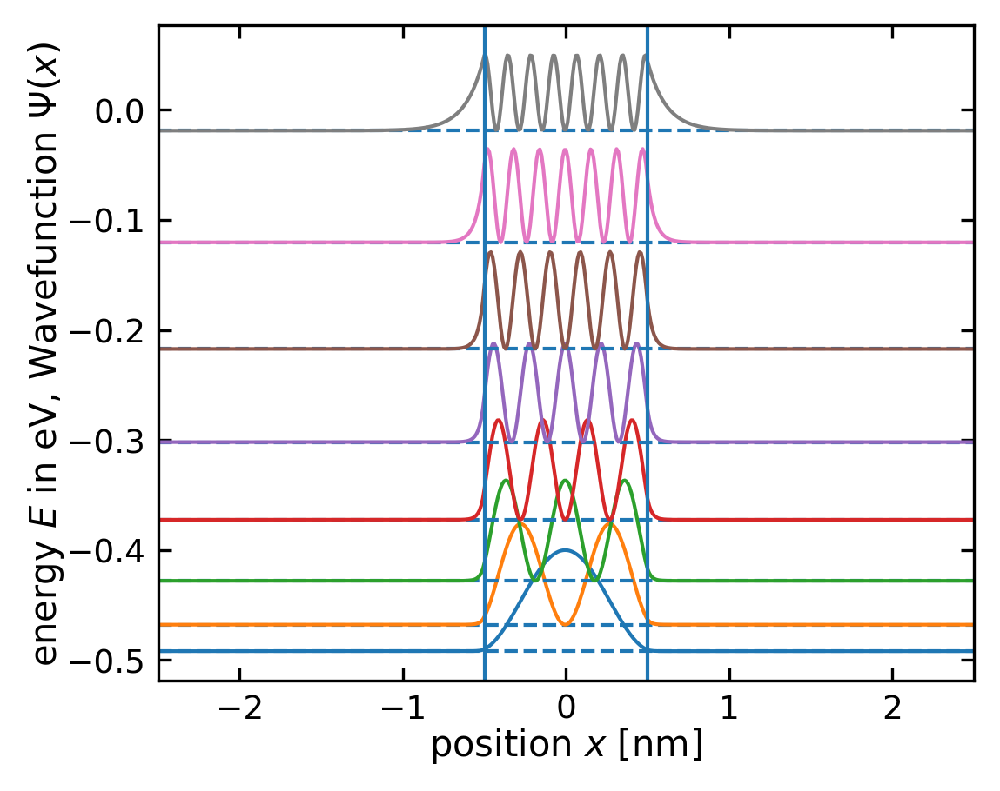
Quantum Confinement
A potential well can be used to confine particles in a small region, leading to quantum confinement effects. This is the basis for many nanoscale devices and materials, such as quantum dots, quantum wells, and quantum wires. These structures have dimensions on the order of nanometers, leading to quantization of energy levels and discrete electronic states.
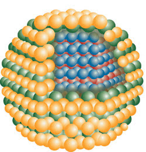
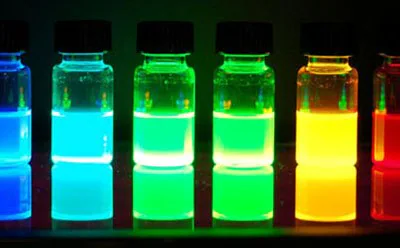
Colloidal quantum dots have typically a size of 2-10 nm and exhibit quantum confinement effects. The size of the quantum dot confines not only the electron but also the hole, leading to quantized energy levels. The energy levels are determined by the size of the quantum dot and can be tuned by changing the dot size. This quantum confinement effect is responsible for the size-dependent optical properties of quantum dots, such as their emission color.
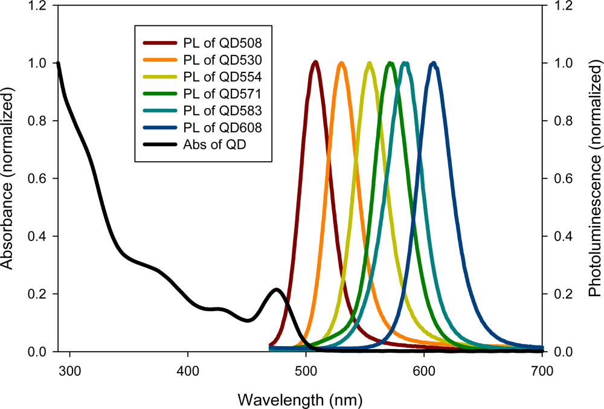
Scattering states
In the case when the energy \(E>0\) the particle is free and the states are scattering states, which are not bound to the well. The solutions in all regions are now oscillatory. We are interested now in the effect of the potential on the scattering states. The calculation involves the same conditions as before for the boundaries. We only give the solution for the transmission coefficient \(T\), which measures how the wavefunction is influences by the potential well. The transmission coefficient for \(E > 0\) is given by:
\[T = \frac{4k_1^2k_2^2}{4k_1^2k_2^2 + (k_1^2 - k_2^2)^2\sin^2(k_2a)}\]
or
\[T =\left(1+\frac{V_0^2}{4 E\left(E+V_0\right)} \sin ^2\left(\frac{a}{\hbar} \sqrt{2 m\left(E+V_0\right)}\right)\right)^{-1}\]
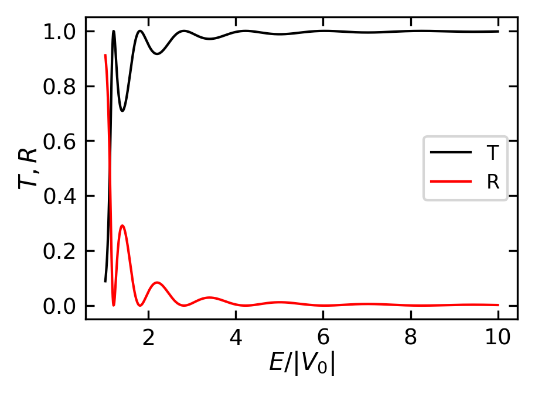
This shows that unlike the classical case, quantum mechanics predicts partial reflection even when \(E > 0\), with perfect transmission occurring when \(k_2a = n\pi\), where \(n\) is an integer.
The plot shows oscillations in the transmission coefficient, a purely quantum mechanical effect not present in classical mechanics. The transmission probability varies between 1 (perfect transmission) and a minimum value that depends on the ratio \(E/V_0\), with the oscillations becoming more rapid at higher energies.
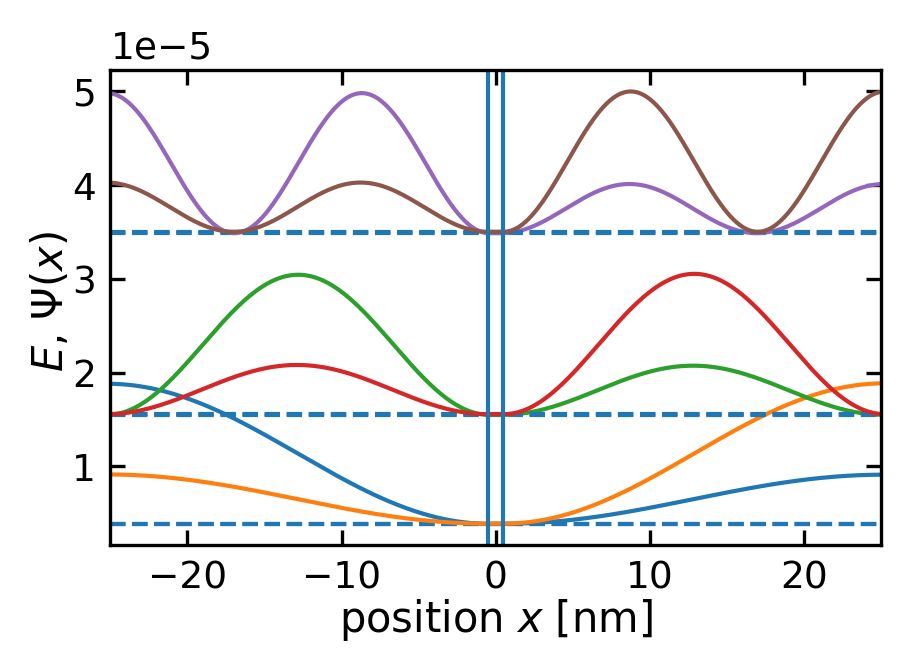